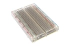
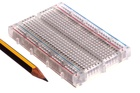

400 Point Clear Breadboard - BB4C
Summary
Name: 400 Point Clear Breadboard
ID: BREB-P400-C-STAN-01
Hex ID: BB4C
WebPage: https://github.com/oomlout/oomlout-OOMP/wiki/BREB-P400-C-STAN-01
Short URL: http://oom.lt/BB4C
Revision History: https://github.com/oomlout/oomlout-OOMP/blob/master/parts/BREB-P400-C-STAN-01/
| Type |
Size |
Color |
Description |
Index |
BREB
Breadboard |
P400
400 Point |
C
Clear |
STAN
|
01
|
Images


About
The start of any project. Great for quickly prototyping a new ciruit. Compatible with most 2.54 mm (0.1") components.
Common Uses
This part is commonly used as:
*a base for prototyping new circuits.
Specifications
| Info |
Value |
| Type |
Breadboard |
| Size |
400 Point |
| Color |
Clear |
| Pitch |
2.54 mm |
| Width |
53 mm |
| Height |
8.5 mm |
| Length |
82 mm |
| Maximum Voltage |
300 v |
Extra Details
Spotted a mistake, want to add more? Let us know oomp@oomlout.com
All images and resources are licensed [CC BY-SA] unless otherwise stated (ie. the datasheets)